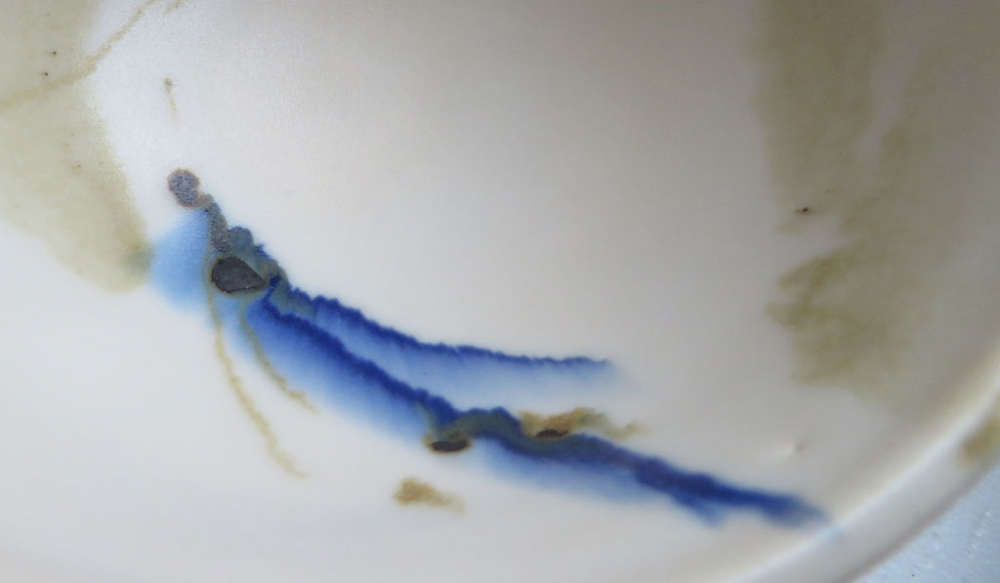
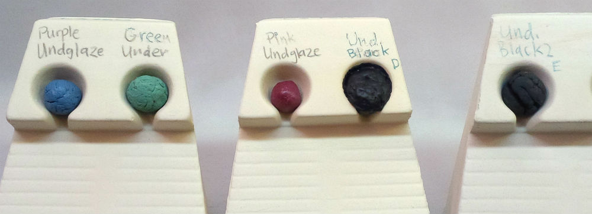
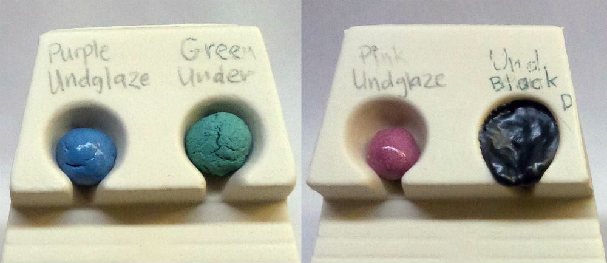
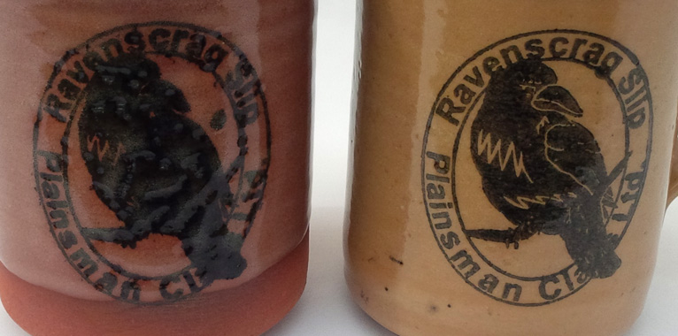

Bleeding Colors
In ceramics, the edges of overglaze and underglaze color decoration often bleeds into the over or under glaze. How can this be avoided.
Details
Overglaze decoration (and frequently underglazes) often bleed on the edges, especially brushstrokes. The higher the melt fluidity of the colored layer the more bleeding will occur, especially if the over or under-glaze is also fluid. Cobalt colors are often more fluid and runny, that is why this problem is most commonly seen with blues (this is true even with cobalt silicate stains, manufacturers recommend cobalt aluminate products for this).
While there are other factors, control of the melt fluidity of the glaze and colored under/over glaze is the most important. Matte glazes tend to be more stable (less fluid) and thus host overglaze colors better (although some matte glazes are still fluid because their matteness mechanism is surface crystallization during cooling). The thickness of the glaze layer is also important, some glazes are stable on vertical surfaces, up to a point, after which that stability quickly degrades as they begin to run. It is thus important to know the degree of melt fluidity for both your glaze and over/underglazes. Take the time to make melt fluidity test balls to compare them.
Stain powders are not just mixed with water and painted on to ware. They need to be part of a recipe: A base with a color addition. The base is a transparent matte or glossy glaze having as low a melt fluidity and LOI as possible yet still producing a good glass. It also has a chemistry that is sympathetic to the stains being used (stain companies outline chemistry requirements for host glazes in their documentation). Bases will almost always be very high in frit content. They will also contain 1-1.5% gum to make them brush well and dry slowly. However, there is a problem. Different stains have differing color strengths and different effects on glaze melt fluidity (and even other properties like thermal expansion). Powerful colors, like blue, will likely not comprise more than 10% (with 90% base). Others, like yellow, will need a much higher percentage. Through testing the coloring power of each stain can be assessed (and its percentage adjusted). Its effect on melt fluidity should be adjusted for. How? One way is to have two or three variations on the base, spanning a range from very stiff melt (even incompletely melted) to one that melts very well (even too much). As an example, suppose you are using a magnesia matte cone 6 glaze, like G2934Y and a color is making it too fluid. Try replacing half of the G2934Y with a cone 10 magnesia matte, G2571A. If the opposite is needed, add a balanced frit like Ferro 3195 to make it melt better.
Adjusting the recipe to accommodate each color requires considerable testing (some commercial glaze manufacturers do not even do this and the variations in their products demonstrate that). But if you are developing your own colors, seriously consider doing the work necessary to make them work properly. Start with one color, then two, then more. An added benefit will be the ability to see how subtle visual effects on colours change as their melt fluidity is adjusted.
Related Information
Bleeding underglaze. Why?

This picture has its own page with more detail, click here to see it.
This cobalt underglaze is bleeding into the transparent glaze that covers it. This is happening either because the underglaze is too highly fluxed, the over glaze has too high of a melt fluidity or the firing is being soaked too long. Engobes used under the glaze (underglazes) need to be formulated for the specific temperature and colorant they will host, cobalt is known for this problem so it needs to be hosted in a less vitreous engobe medium. When medium-colorant compounds melt too much they bleed, if too little they do not bond to the body well enough. Vigilance is needed to made sure the formulation is right.
A fluid melt glaze bleeds much more into adjoining ones

This picture has its own page with more detail, click here to see it.
The outer green glaze on these cone 6 porcelain mugs has a high melt fluidity. The liner on the upper mug is G3806C, a fluid melt high gloss clear. The liner glaze on the lower one, G2926B, is high gloss but not highly melt fluid. Thus, when both the outer and inner glazes have high melt fluidity (upper mug), they bleed together forming a fuzzy boundary. But when even one of them is not, a crisp boundary is achieved (lower mug).
Why pure stain powders make poor inks, slips, underglazes and overglazes

This picture has its own page with more detail, click here to see it.
On the left are pure blue stain brush strokes, on the right are green ones (both painted over a glaze). Clearly, the green is refractory, stiffening the glaze enough to trap bubbles and sit on the surface as a dry, unmelted layer. The blue is the opposite, melting and bleeding profusely into the glaze. Under the glaze, these problems would be magnified (the blue bleeding more, the green causing crawling and blistering). Stains are not ceramic, they are ceramic additives. Stains are not safe for direct food contact. Stains are expensive. Stains don't suspend in water, paint poorly and dry as a lose powder. These stains each need to be added, as a minor percentage, to a ceramic painting medium (one with CMC gum and a mix of ceramic materials tailored to melt to the desired degree and have a compatible chemistry for develop the color (as per manufacturer guidelines).
Cobalt and iron overglazes bleeding into the matte glaze

This picture has its own page with more detail, click here to see it.
This is the G2934Y matte base with overglaze decoration fired at cone 6. Although this matte has a high melt fluidity, overglaze decoration can be successful as long as it is not applied too thick and not overfired. But in this case the glaze is thickly applied. Once the critical thickness boundary is passed, the glaze's ability to hold overglaze in place quick degrades. The G2934 recipe has less melt fluidity and fires to the same surface, it would would be a better choice as the base glaze in this case (and could be applied thicker). However this Y variation would be a good choice as the medium if you want to make your own overglaze brushable colors.
Underglaze color mayhem at cone 5!

This picture has its own page with more detail, click here to see it.
These are commercial underglaze colors fired in a flow tester. Underglazes are not pure stains, they are a blend of stain powders with a host recipe (a porcelain-like mix of clay, frit, silica) that matures enough to fuse to the body but not so much that it melts. The blue, green and red are from one manufacturer. Stain powders have different melting temperatures and require differing percentages to get color intensity, the base recipe of the medium should compensate for that. That is not being done here, the pink one needs less flux and the green needs more. The black underglaze (D) (from a second manufacturer) has liquefied, gassed out and is about to head down the runway! The E black (a third manufacturer) has not even started to melt or even sinter. The black engobes were plastic, the colored ones were not, likely an indication that black requires a much lower stain percentage in the engobe recipe.
Here is motivation to make your own underglazes!

This picture has its own page with more detail, click here to see it.
Commercial hobby underglazes are high in stain and very expensive. But does expensive mean suitable? To help answer we have over-fired these commercial products in a melt fluidity tester (to cone 8). They are recommended for use from cone 06-6 (some can go higher e.g. the green). Underglazes need to melt enough to bond with the underlying body, but not so much that opacity is lost (any melting loses opacity). Excessive melt can also cause design edges to bleed. To work well at greater thicknesses, underglazes need to have a firing shrinkage similar to the body (an ill-fitted underglaze and body forced into marriage are eventually going to divorce, in the form of flaking or cracking at their interface). Thus, while a regular glaze would melt enough to go well down the runway on this tester, an underglaze should not flow at all. At this temperature, none of these have achieved the right degree of maturity (the green is too refractory, the others over-melt to varying degrees). The only one that has a chance of suitability at cone 6, two cones lower than this, is the blue. Clearly, the base recipe and stain percentage in each underglaze recipe color needs attention, if that can be achieved all of these would mature to the same degree.
Underglazes can be incompatible with the clear overglaze

This picture has its own page with more detail, click here to see it.
These are porcelain tiles that we bisque fired, one-coat decorated with underglazes (Crysanthos), glazed with G3806PS fluid-melt glossy clear glaze and fired to cone 6. Fluid melt clear glazes cover colors much better (without crawling or clouding). Some colors are bleeding, if needed this glaze can be adjusted (by adding kaolin) to make it melt a little less. The rose color on the upper right, #093, is not working? Why? It likely employs a chrome-tin stain, these have requirements: A clear glaze having a minimum amount of CaO, no ZnO and not too much B2O3. This glaze does not qualify. But no transparent glaze works with all underglazes. You could find others that work with #093 but they could cloud, craze, crawl and not be glossy enough. The other orange/pink colors here are working. Why? Because they likely employ inclusion stains. A key factor is that the black is working well, even when applied over the white underglaze.
Why it is not a good idea to use straight stain underglaze

This picture has its own page with more detail, click here to see it.
The logo on the left was rubber-stamped using and ink mix made of only glycerine and Mason 6666 black stain. The glaze is shedding off during firing. Multiple properties needed by a stamping ink are not present here. First, the stain dries as a powder, it has no hardening or bonding properties, glycerine is its only mechanism. Second, it is too concentrated, the black color is so powerful that it bleeds excessively into the overlying glaze. Third, it does not melt during firing so it does not bond with the body below. And, it either develops only a fragile interface with the glaze above, or sheds it off. The piece on the right mixes the stain 50:50 with a glossy transparent glaze, from that it inherits better lays down, accepts the overglaze better and dries harder. Black stains are potent, an 80:20 stain:glaze mix would work even better.
Links
| Glossary |
Bleeding of colors
In ceramics, the edges of overglaze and underglaze color decoration often bleeds into the over or under glaze. How can this be avoided. |
| Glossary |
Ceramic Glaze Defects
Ceramic glaze defects include things like pinholes, blisters, crazing, shivering, leaching, crawling, cutlery marking, clouding and color problems. |
 PayPal | No tracking, No ads, No paywall, No transient content! Just organized, concise information constantly updated and improved. Was this helpful? Consider supporting me. |
| By Tony Hansen Follow me on        |  |
Got a Question?
Buy me a coffee and we can talk 

https://digitalfire.com, All Rights Reserved
Privacy Policy